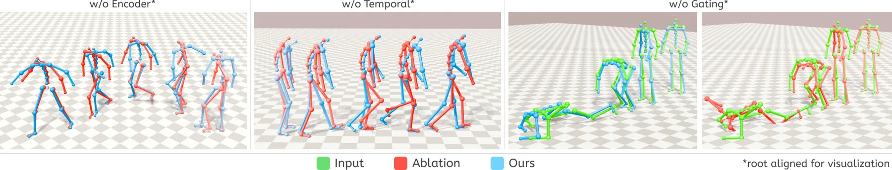
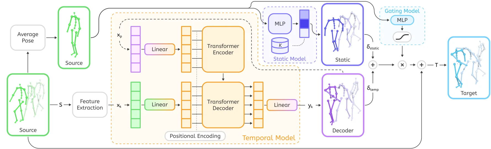
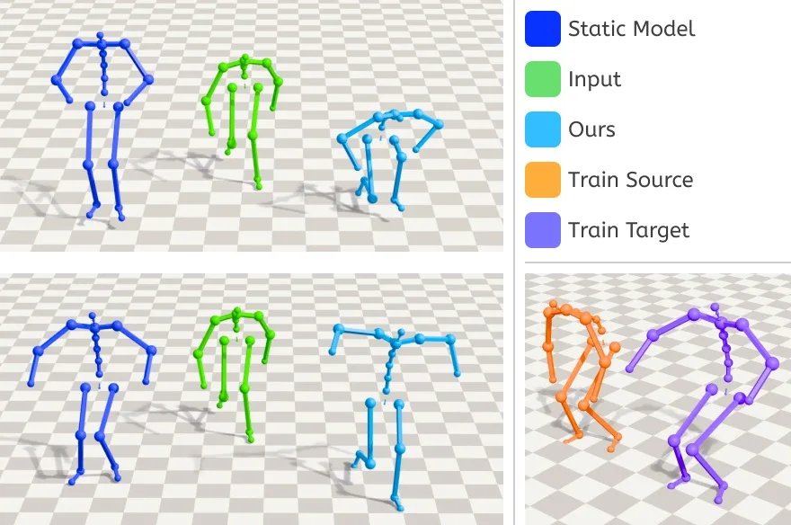
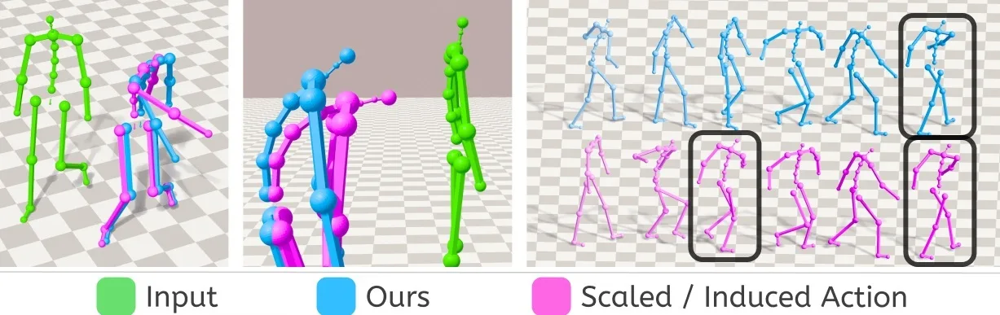
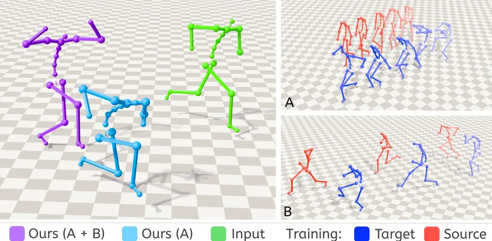

STyMo：快速可控的 few-shot motion style transferSTyMo: Fast and Controllable Few-Shot Motion Style Transfer
A 级鲁棒性观察项；可借鉴到动作先验、策略数据增强和异常动作拒绝。
一句话工作总结
其对空间智能的价值不在风格本身，而在于把可解释的时空因素分离并显式处理 OOD。
半海报（待补全）
当前记录尚未达到完整海报质量门槛，暂不把摘要或评分理由冒充方法/实验结论。
待补字段：研究上下文.authors（至少 1 条实质条目）。下一次任务需从论文全文或官方 HTML 提取证据后再发布。
摘要
STyMo 将运动风格分解为静态姿态与时间动态，并提供运行时强度和身体区域控制。它还用 stylizability gate 避免 OOD 动作产生伪影，训练只需几秒配对数据和约一至两分钟。
Supporting a wide variety of motion styles is critical for creating diverse virtual characters, but current methods either require large stylized datasets or pre-trained models that cannot generalize beyond their training distribution. We present STyMo, a few-shot approach that learns motion style from only seconds of paired data and trains in one to two minutes. Our key insight is to decompose style into two components: a static component capturing time-invariant posture, and a temporal component capturing frame-wise dynamics. This decomposition yields an interpretable system where posture intensity, temporal exaggeration, and per-body-region style can be adjusted at runtime. Furthermore, the reduction in required training data and computation time structurally permits an iterative authoring workflow. To ensure robustness on arbitrary inputs, we further introduce a stylizability gate that automatically prevents artifacts on out-of-distribution motions. We demonstrate results across diverse motion styles, from subtle emotional variations to exaggerated character archetypes, and release our processed paired dataset to facilitate future research.
图表/页面预览

{kind=link}

{kind=link}

{kind=link}

{kind=link}

{kind=link}
